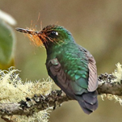
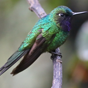
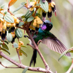

Colibrí Violeta
Heliangelus viola
Orden: Apodiformes
Familia: Trochilidae
Inconfundible: mayormente verde esmeralda con la garganta púrpura y la frente azul. También nota el pico bastante corto y recto. Los sexos son similares, pero las hembras son un poco más opacas. Ocurre en el borde de bosques y en áreas arbustivas desde alrededor de 1,800 a 3,300 m. Visita comederos.



